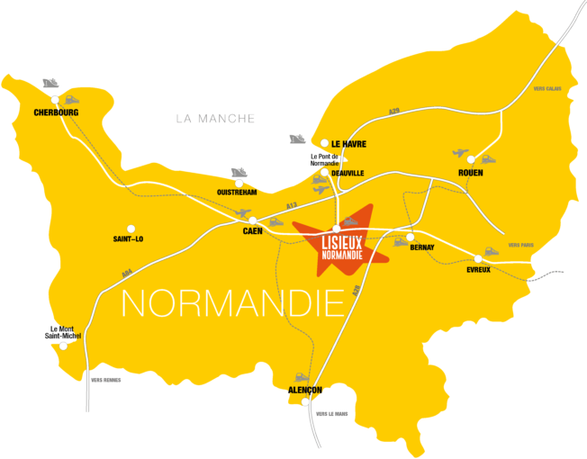

Se déplacer dans Lisieux
A 20 min du littoral et à 2 heures de Paris, la Communauté d'agglomérations Lisieux Normandie s’étend sur un vaste territoire de 939 km². Elle regroupe plus de 74 800 habitants, 53 communes et 111 communes historiques.
Née au 1er janvier 2017 de la fusion de 5 communautés de communes (Lintercom Lisieux Pays d’Auge Normandie, Communautés de communes de la Vallée d’Auge, des Trois Rivières, du Pays de l’Orbiquet, et du Pays de Livarot), l’agglomération a accueilli au 1er janvier 2018 6 nouvelles communes : Cambremer, Montreuil-en-Auge, Notre-Dame-de-Livet, Notre-Dame-d’Estrées-Corbon, Saint-Laurent-du-Mont et Saint-Ouen-le-Pin.
Le regroupement de cinq Communautés de communes dans un espace de solidarité a pour but d’élaborer et de conduire ensemble un projet de territoire partagé et structurant. Ce projet vise à promouvoir la nouvelle identité de la collectivité, ses valeurs en France et en Europe, à renforcer son attractivité à l’échelle régionale et à développer les coopérations entre les communes qui la composent.
La Communauté d’agglomérations s’inscrit dans une dynamique de territoire à l’échelle de la nouvelle région Normandie à travers son intégration dans le pôle métropolitain de l’Estuaire de la Seine et dans son adhésion au pôle métropolitain Caen Normandie Métropole.